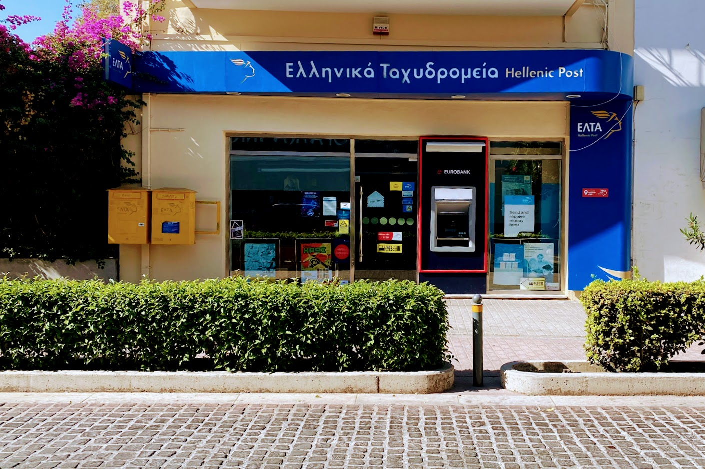

Binnen 10 dagen betalen
Een boete moet binnen 10 dagen na uitschrijving worden betaald. Dat kan bij het postkantoor op Kos.
📍 Locatie postkantoorWat er gebeurt als je een boete niet op tijd betaalt.

Een boete moet binnen 10 dagen na uitschrijving worden betaald. Dat kan bij het postkantoor op Kos.
📍 Locatie postkantoorAls u dit nalaat en gewoon naar huis vliegt, zal Griekenland automatisch een procedure starten zodra de betalingstermijn is overschreden.
Onbetaalde boetes kunnen later worden opgevolgd via grensoverschrijdende EU-mechanismen, die de mogelijkheid bieden om openstaande boetes met verhoogde kosten in heel de EU te incasseren. Tevens blijft u geregistreerd in Griekenland, en bij een volgend bezoek kan de boete alsnog worden opgeëist.
Sinds Brexit valt het Verenigd Koninkrijk niet meer onder het EU-verkeersboetensysteem. Griekenland kan niet automatisch via het EU-systeem boetes innen bij mensen in het VK.
UK-bewoners hoeven niet bang te zijn dat Griekenland via het EU-systeem direct kan innen, maar de boete blijft staan en kan later juridische of administratieve gevolgen hebben als men Griekenland weer bezoekt of zich ooit in de EU vestigt.
What happens if you don't pay a fine on time.
A fine must be paid within 10 days of being issued. You can do this at the post office on Kos.
📍 Post office locationIf you leave without paying, Greece will automatically start a procedure once the payment deadline has passed.
Unpaid fines can later be followed up via cross-border EU mechanisms, allowing collection across the EU with extra costs. You also remain registered in Greece, and on a later visit the fine can still be claimed.
Since Brexit, the UK is no longer under the EU traffic fine system. Greece cannot automatically collect via the EU system from people in the UK.
UK residents need not fear direct EU collection, but the fine remains and can later have legal or administrative consequences if you return to Greece or settle in the EU.
Was passiert, wenn Sie ein Bußgeld nicht rechtzeitig zahlen.
Ein Bußgeld muss innerhalb von 10 Tagen nach Ausstellung bezahlt werden — im Postamt auf Kos.
📍 PostamtWenn Sie ohne Zahlung nach Hause fliegen, startet Griechenland automatisch ein Verfahren nach Ablauf der Frist.
Unbezahlte Bußgelder können später über EU-Mechanismen mit erhöhten Kosten in der gesamten EU eingezogen werden. Bei einem späteren Besuch kann das Bußgeld weiterhin eingefordert werden.
Seit dem Brexit fällt das Vereinigte Königreich nicht mehr unter das EU-Bußgeldsystem. Griechenland kann nicht automatisch über das EU-System bei UK-Bewohnern eintreiben.
Das Bußgeld bleibt aber bestehen und kann später Folgen haben, wenn man Griechenland erneut besucht oder sich in der EU niederlässt.
Cosa succede se non paghi una multa in tempo.
La multa va pagata entro 10 giorni dall’emissione, all’ufficio postale di Kos.
📍 Ufficio postaleSe parti senza pagare, la Grecia avvia automaticamente una procedura dopo la scadenza.
Le multe non pagate possono essere recuperate in UE con costi aggiuntivi. Resta registrato in Grecia e in un viaggio successivo la multa può ancora essere richiesta.
Dopo la Brexit il Regno Unito non rientra più nel sistema UE delle multe. La Grecia non può riscuotere automaticamente via UE nel Regno Unito.
La multa resta e può avere conseguenze se torni in Grecia o ti stabilisci nell’UE.
Cezayı zamanında ödemezseniz ne olur.
Ceza, düzenlenmesinden itibaren 10 gün içinde Kos postanesinde ödenmelidir.
📍 Postane konumuÖdemeden eve uçarsanız, süre dolunca Yunanistan otomatik işlem başlatır.
Ödenmemiş cezalar AB mekanizmalarıyla ekstra maliyetle tahsil edilebilir. Yunanistan’da kayıtlı kalırsınız; sonraki ziyarette ceza yine istenebilir.
Brexit sonrası Birleşik Krallık AB trafik ceza sisteminde değildir. Yunanistan AB üzerinden otomatik tahsilat yapamaz.
Ceza yine de durur; Yunanistan’a dönüşte veya AB’ye yerleşmede sonuçları olabilir.
Qué ocurre si no pagas una multa a tiempo.
La multa debe pagarse en 10 días desde su emisión, en correos de Kos.
📍 Ubicación correosSi te vas sin pagar, Grecia inicia automáticamente un procedimiento al vencer el plazo.
Las multas impagadas pueden reclamarse en la UE con costes extra. Quedas registrado en Grecia y en una visita posterior pueden exigir la multa.
Tras el Brexit, el Reino Unido no está en el sistema de multas de la UE. Grecia no puede cobrar automáticamente vía UE en el Reino Unido.
La multa sigue existiendo y puede tener consecuencias si vuelves a Grecia o te estableces en la UE.